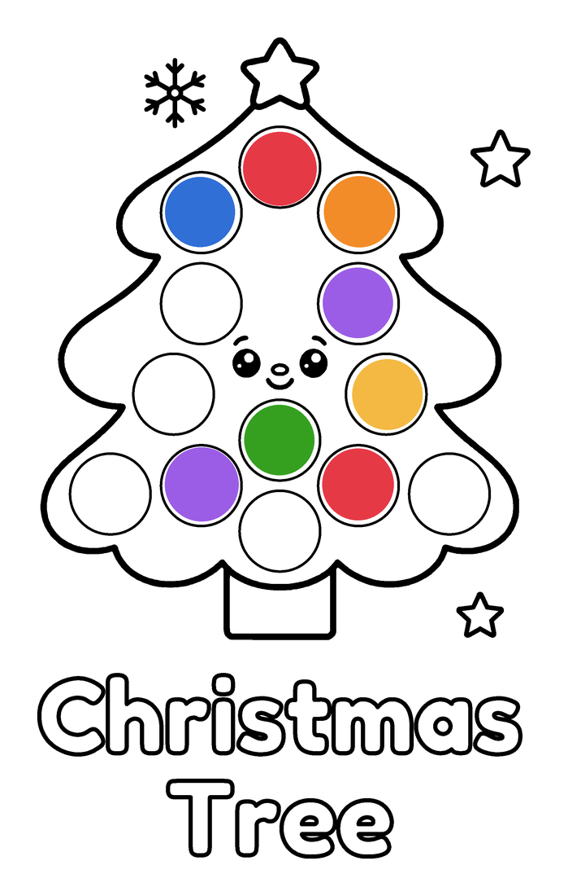

Free Christmas Tree Dot Marker Printable for Toddlers
Big circles, thick lines and one dab of a dot marker in each circle. Print it at home and let your little one dab away. Made for ages 1-3.

Want more? This page is from the Binneezy Kids Christmas Dot Marker Book: 34 big-dot pages to print as often as you like.
Get all 34 pages on Etsy